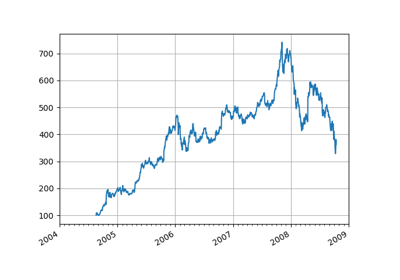
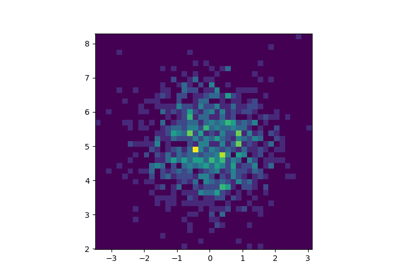
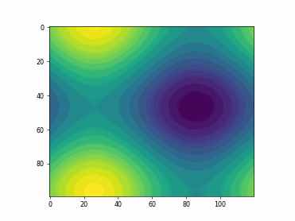
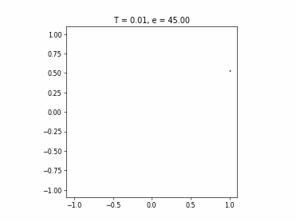
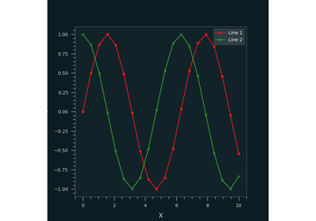
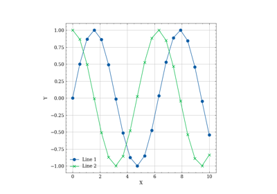

12.3.10.1. Matplotlib# Buttons Buttons Colorbar tick labelling Colorbar tick labelling Cyberpunk Cyberpunk  Date axis Date axis Errorbar Errorbar Fill features Fill features Function animation Function animation GGPlot GGPlot  Histogram 2D size control Histogram 2D size control Logarithmus Logarithmus 1D animation 1D animation  2D animation 2D animation  1D func animation 1D func animation Events Events Multi cursor Multi cursor Oscilloscope Oscilloscope Path editor Path editor Polar axis Polar axis  Quantum Black Styles Quantum Black Styles Scatter 3D Scatter 3D  Science Plots Science Plots Slider Slider Streamplot Streamplot Surface 3D Surface 3D Tex Tex Text fontdict Text fontdict Toolmanager Toolmanager